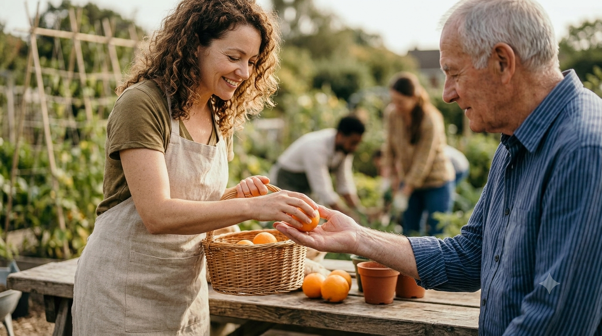

A Escuta Ativa na Era Digital
Como realmente ouvir o outro em um mundo cheio de notificações e ruídos constantes?
Ler mais →Um espaço dedicado a explorar a arte de se colocar no lugar do outro e construir pontes para um futuro coletivo.
Ler os ArtigosComo realmente ouvir o outro em um mundo cheio de notificações e ruídos constantes?
Ler mais →Por que ir mais rápido sozinho não supera o impacto de ir mais longe acompanhado.
Ler mais →
Como a micro-empatia no dia a dia pode transformar o ambiente de trabalho e familiar.
Ler mais →